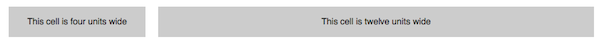

Planning and Mockups¶
Why do this?¶
Because most customers are visual, we work with them to develop something that will give them a good idea of how their application will behave. This course focuses mostly on development not design, so we will use “shortcuts” for our design work. For a full project there will be need for a UI designer to layout the look to the satisfaction of the customer.
Mockup up tools¶
Some tools that I have worked with are:
- LucidChart - an HTML5 based diagram tool
- Cacoo - a Flash based diagram tool (has a nice sketchy style for mockups)
- Mockingbird - an HTML5 based diagram tool
Browse their websites and sign up for one of the services (the first two allow you to log in with your google account, which means you will have one less password to worry about)

Layout using a CSS Framework¶
There are several CSS Frameworks which help to simplify the task of creating an HTML layout. For this layout I’ve decided to use the deco.gs framework. In addition to these frameworks new applications like Initializr help to get you started quickly.
The deco.gs system uses a combination of two CSS classes ”.row” and ”.cell” to acheive layout. The cells are supplemented by special position- and width- convenience classes, which determine where within a row a cell will be placed as well as how much space that cell takes up.
In the example below we use two different cell widths [1], width-4 and width-12 to create our layout.
<div class="row">
<div class ="cell position-0 width-4">This cell is four units wide</div>
<div class ="cell position-4 width-12">This cell is twelve units wide</div>
</div>
The resulting layout:
After looking at the mockup, we’ve determined that the UI could be divided into 5 rows, each row will have a varied number of cells and the width of each cell will vary.

If each row gets a unique id from row-1 to row-5 we could recreate the structure of the mockup with deco.gs using the following code.
<div id="row-1" class="row">
<div class ="cell position-0 width-3">logo</div>
<div class ="cell position-3 width-6">the menu</div>
<div class ="cell position-9 width-3">search</div>
</div>
<div id="row-2" class="row">
<div class ="cell position-0 width-3">submit a recipe</div>
<div class ="cell position-3 width-9">highlight recipes</div>
</div>
<div id="row-3" class="row">
<div class ="cell position-0 width-3">popular ingredients</div>
<div class ="cell position-3 width-4">new recipes box</div>
<div class ="cell position-7 width-5">popular recipes box</div>
</div>
<div id="row-4" class="row">
<div class ="cell position-3 width-9">Recipe Categories</div>
</div>
<div id="row-5" class="row">
<div class ="cell position-0 width-3">I heart Recipes</div>
<div class ="cell position-3 width-4">footer stuff</div>
<div class ="cell position-7 width-5">social stuff</div>
</div>
Discussion Points¶
- What might be some pros and cons to presenting the mockup in a “sketchy” style?
- How does a css grid framework simplify things?
- What does the term convenience class suggest?
- Look at the proposed html code, is there anything interesting about ‘row-4’?
- The code shown represents snippets, what would we need to add to complete it?
| [1] | Note that the cell convenience classes are added to the same div tag as the cell. |